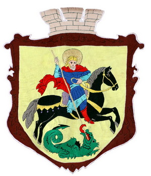
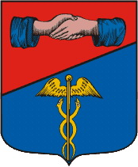
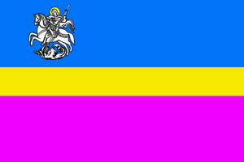
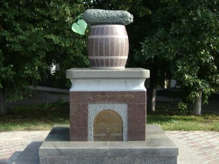

Зміст
Офіційний герб Ніжина

Надано привілеєм польського короля Сигізмунда ІІІ у 1625 р. разом із магдебурзьким правом.
Зображав Георгія Побідоносця на коні, вражаючого списом змія. Підтверджений привілеями Владислава ІV 1633 року, Яна Казиміра 1659 року.
Затверджено рішенням ХХV сесії Ніжинської міської ради ХХІ скликання від 14.10.1992 р.
Інші герби

Указом Катерини ІІ від 1782 року було затверджено герб з потисканням лівих рук і жезлом меркурія, який проіснував до 1917 року.
Георгій Побідоносець на коні, що вражає списом змія, указом тієї ж Імператриці був затверджений в 1781 році в якості герба міста Москви.
В другій половині ХХ століття Ніжин мав герб з розгорнутою книгою, зубчастим колесом і колоском.
Прапор міста

Являє прямокутне полотнище з трьома горизонтальними смугами.
Верхня широка смуга синього кольору, середня вузька жовта смуга, нижня широка малинова смуга,
у верхньому лівому куті розташоване зображення Георгія Побідоносця, аналогічне до того, що на гербі міста.
Ніжинський огірок

Вважається, що першими селекціонерами, засолювачами і розповсюджувачами ніжинських огірків були місцеві греки,
що оселилися тут у середині XVII століття після перемоги українців у Національно-Визвольній війні 1648—57 років — тоді спеціальним універсалом від 5 травня 1657 року гетьман Хмельницький надав
грекам право на самоврядування, звільнив від сплати будь-яких податків і дозволив не виконувати державні повинності.